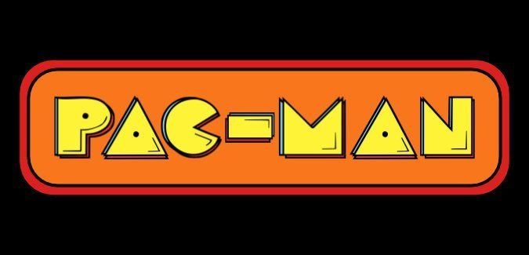

1D Paku Paku Game + Enhanced with PHP

Project Overview:
A 1-D version of the classic Pac-Man Arcade game where the goal is to collect all of the pellets to gain as high of a score as possible and traverse the next levels after collecting each pellet. There is also a ghost chasing you around to prevent you from eating all the pellete. However, by eating fruits in the game, you will be given the time to try eat the ghost to help you beat the level.
Objectives:
- Enhance the 1-D Pacman game by adding a PHP server component to my Pacman GitHub code repository, building on models developed during lab sessions.
- Expose the Pacman game functionality through a JSON API and updated the JavaScript to make AJAX calls to the newly created API.
- All game state is stored on the PHP server using PHP $_SESSION, and the HTML/CSS/JavaScript focuses solely on displaying the current state of the game. The JavaScript does not calculate scores or track progress; it simply displays the current state.
- Implemented a game leaderboard showing the top 10 scores. For simplicity, this information is also stored in the PHP $_SESSION
Technical Outline:
- Models:
- Manages Pacman, Ghost, map, score, size, and game status
- Manages Ghost’s location and direction.
- Manages Pacman’s location, power status, and direction.
- Includes methods for movement, direction, and power status updates.
- API:
- Manages game state and leaderboard
- Provides endpoints for resetting the game, initializing the map, running the game loop, advancing levels, changing Pacman’s direction, recording scores, and reading the leaderboard.
.
- Frontend:
- HTML layout for the game interface, including inputs, buttons, and scoreboards.
- JavaScript (using jQuery) for handling UI interactions and making API calls.
.
- Leaderboard:
- Data .json File Stores the top 10 player scores in JSON format, ranked by username..
Visual Outline:
- Inital Map Size of the Game Board Created of Size 10
:
- Game Leaederboard of top 10 Scores updated:
Git link for access the project. Press here to enter!